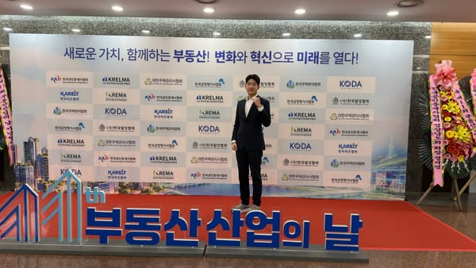

RÉSUMÉ · 1-PAGE SUMMARY
AI Workflow · Verification Governance · Legal & Real Estate
김유빈 YUBIN KIM
고위험 법률 · 부동산 업무에서, 담당자가 근거를 확인해 판단하는 AI 업무 절차를 설계합니다.
Eyubin120866@gmail.comWyubinxe.github.io/PortfolioGgithub.com/yubinxe




01경력 Experience
2026. 06 – 재직 중
- 정비사업 법률 AX 3종(법령 변화 관제 · 총회결의 절차 검토 · 계약 변경 검토) 구축 — 송무팀과 역할 분담을 정하고 상급자 검수 후 공식 도입(전 구성원 사용)
- 정비사업 공공입찰 · 용역비 데이터 정기 수집 · 정형화로 단가 비교 기준선 마련
- 광명시흥 3기 신도시 보상자료 분석 — 발표자료 77장
- 고객 메일 1차 분류 화면, NAVER WORKS 연동 급여명세서 발송 자동화
- 소장 편집 · 전자공탁 · 법원 외근 등 송무 지원, 법률 콘텐츠 제작
02프로젝트 Selected Builds
집캐치 ZipCatch 개인 프로젝트 · 2026. 06 – 운영 중
청약홈 · LH 공고를 지도에 모아 조건별로 비교하는 서비스. 단독 기획 · 배포, 구현은 AI 코딩 도구 · 설계와 검수는 직접. 모바일 LCP 5.2→2.0초(느린 4G).
zipcatch.vercel.app →
재판 준비 브리핑 Trial Brief 개인 시제품 · 경국 도입 아님
사건기록을 1쪽 브리핑으로 정리. 가상 민사사건 3건에 넣은 불일치 · 누락 15개 모두 검출, 오탐 0건(가상 테스트).
시제품 보기 →공개 발표 · 시연 2회 KREMA 교육생
9.30 집코노미 박람회 AI 전시관(코엑스), 11.11 제11회 부동산산업의 날 협회 홍보부스(건설회관). 한국경제 등 보도.
현장 기록 →공개 데이터 상황판 개인 프로젝트 · Vercel 배포
법조시장 · 국정 상황판, AI 에이전트 관제 대시보드(사람 승인 단계 포함).
제품 화면 →03교육 Education
- 서울 핀테크 아카데미 14기 트랙 2 · 3 수료
- 서울대 AI 교육 전문가 과정(AIED) 4기 수료
- KREMA AI 활용 마케팅기획자 양성과정 매력일자리 3기 교육생 · 수료
- 명지대 AI 데이터 매니지먼트 트랙 1 · 2 · 3 · 4 전 과정 수료(그랜드마스터)
- 삼성청년SW·AI아카데미(SSAFY) 13기 이수
- 대구일마이스터고등학교 졸업
- 독일 베를린 OSZ TIEM 기술교육 · Vattenfall Wärme Berlin AG 인턴십
위 과정은 학위가 아닌 비학위 전문교육입니다.
04자격 · 수상 · 도구 Credentials
- 분양대행자 · 전기기능사 · 한국사 3급 · TESAT
- OPIc IH 영어 · 2025. 03
- 국민 대토론회 자산분과 참여 팀 중 1위(팀 제안 · 발표)
- 강원열린군대 스타트업 2위 · 제2군단장상
- 육군훈련소 최우수 분대 · 훈련소장
- 육군 군필 · 2023. 02 – 2024. 09
- Claude API · Python · Next.js · Supabase · Vercel
05다음 대화 Contact
yubin120866@gmail.com포트폴리오실무 사례집상세 경력
버튼은 메일 앱을 열어 제목을 채워 둘 뿐입니다. 보내기는 메일 앱에서 직접 눌러 주세요.